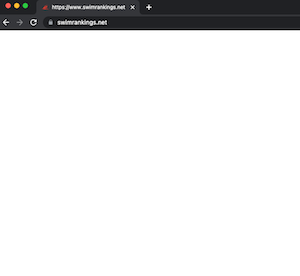
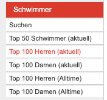
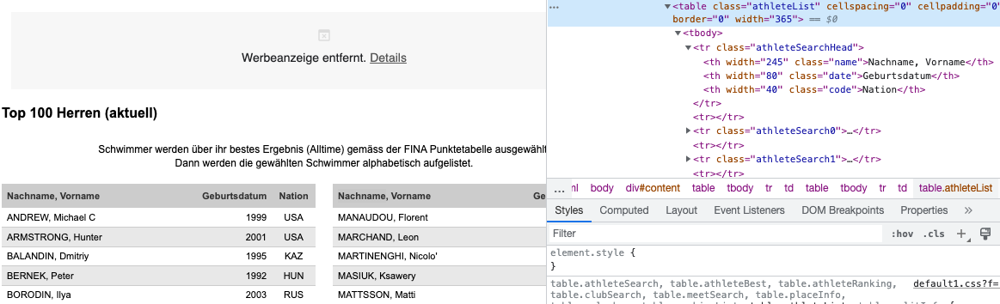
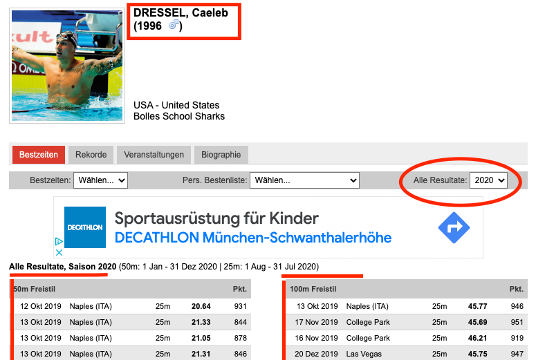
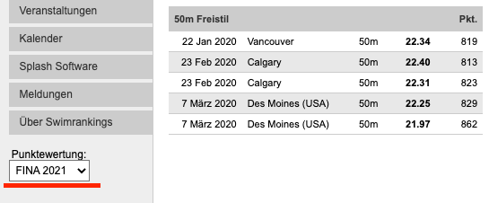
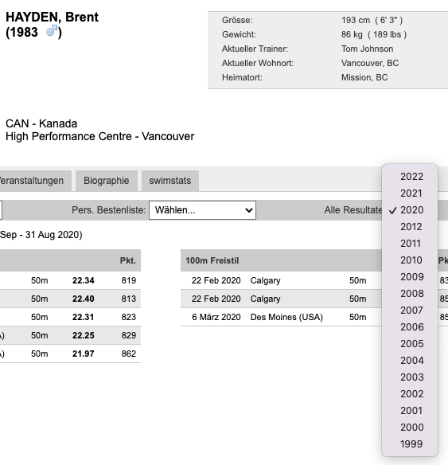
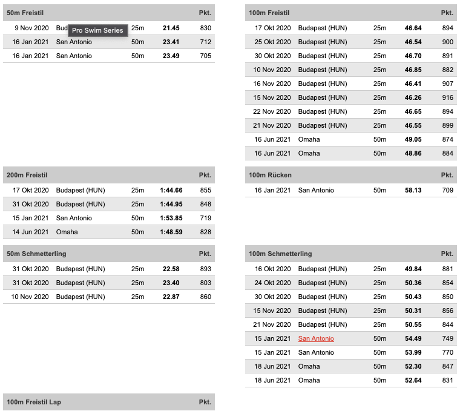

Acquiring Data
Contents
Acquiring Data#
General thoughts on ethics of webscrapping#
In this chapter a website called swimrankings.net is scrapped.
Web crawlers or scrapping are boon and bane for website operators. On the one hand they need crawlers - especially Google’s - to search and classify the websites’ content. On the other hand webscrapping leads to increased website traffic and thus increased costs for operators. The robots.txt for swimrankings.net blocks crawlers who are not from Google. And they have scrapping protection in place. The screenshot shows that an empty page was returned, after I accidentaly run the code cell and a lot of requests in short time where send to the websites host.

After a while the side loaded again and asked if I am a robot:
The data is the website’s exclusiv content and has to be respected as well as the fact that the website seems to finance itself with Google Ads and showing those ads to real people, not to Beautiful Soup. This is a small insight on ethical issues when performing webscrapping, because such a website might not be financially well provided to deal with traffic from being a constant webscrapping target.
For this learning project the running time of the scrapping code is less important than the risk of having no data. Therefore and while having the ethical issues in mind the scrapping code was executed only once with several hours of time running. However the code is implemented in way that much more data (e.g. from seasons or athletes) could have been requested, but the approach “only take what you need” was performed.
To behave like a human and to achieve the ridicoulous long time running the code is written with time.sleep and randint functions. This leads in worst case (if always the highest randint would be waited) to a time of 4.5 hours. This approach was chosen because in that time a human might has copied the data manually while ignoring the adds. Additionally different userAgents for BeautifulSoup are chosen with random.choice.
from myfunc import *
from bs4 import BeautifulSoup
import requests
import plotly.express as px
import sqlalchemy as sa
import lxml
import time
import random
from IPython.display import display, clear_output
from pymongo import MongoClient
'''
Creating own exception classes
'''
class Error(Exception):
""" Base class for own exceptions """
pass
class List_Unequal_Length(Error):
""" Raised when the lists with swimmer data are unequal in length """
def __init__(self,message='Something went wrong. One list is shorter than another.'):
self.message = message
super().__init__(self.message)
Basic Data for Top 100 Athletes#
Prepartion#
swimrankings.net provides an overview of Top 100 currently activeathletes as well as Top 100 alltime athletes - each for male and female athletes. The screenshot shows a part of the websites’ menu. Each of the Top100 websites will be scrapped separately. Therefore a list with links is initiated below.

(Source: swimrankings.net)
linkList = ['https://www.swimrankings.net/index.php?page=athleteSelect&nationId=0&selectPage=TOP100_MEN',
'https://www.swimrankings.net/index.php?page=athleteSelect&nationId=0&selectPage=TOP100_WOMEN',
'https://www.swimrankings.net/index.php?page=athleteSelect&nationId=0&selectPage=TOP100_MEN_ALL',
'https://www.swimrankings.net/index.php?page=athleteSelect&nationId=0&selectPage=TOP100_WOMEN_ALL']
Scrapping Top 100 Lists#
In the following code block the above mentioned lists is scrapped with BeautifulSoup bs4. Each link to a Top 100 list will be requested from the server only once and the text will be parsed for html code.
The h3.tag contains the title of the top100 list and is printed for overview while the code is running. Additionaly it provides details that are the same for all athletes. Therefore the gender and the time is appended for every athlete in the list. When writting about time in the context of Top 100 lists the status “current” or “alltime” are meant. It is expected that alltime refers to athletes who still have an overall best value (like a world record) and are simply not active any more.
Following Screenshot shows that each Top 100 lists consists of two tables which can be identified by the html-table-class “athleteList”. After finding the tables with class “athleteList” a function is called to save name, year of birth, nationality and a website-specific swimmer id in a list of dicts. As described above, those dicts will also contain the gender and status (currently active or alltime athlete). The swimmer’s id is part of a link to his/her specific data and is required for further activities.
Each outputList from the function scrap_tables will extend the swimmerList. Thus swimmerList will be a list of 400 swimming athletes from all Top 100 categories.

(Source: swimrankings.net: Top100 Herren aktuell)
def get_swimmer_ID(mystring):
return mystring[mystring.find('=',6)+1:]
def swimmerDetails(myString):
return swimmerSex(myString), swimmerTime(myString)
def swimmerSex(myString):
if 'Men' in myString:
return 'm'
else:
return 'f'
def swimmerTime(myString):
if 'alltime' in myString:
return 'alltime'
else:
return 'current'
def scrap_tables(tables,sex,time):
'''
takes a tables extracted with beautifulsoup, a string with gender information and a string with time(current or alltime) information.
returns a List with attributes of an athlete
function is looking for different class_types to get the athlete attributes from the provided html tables
checks if single lists for all attributes are of same length, else raises error: List_Unequal_Length
generates a dictionary for every athlete and appends to outputList
'''
outputList = []
for table in tables:
names = table.find_all('td', class_='name')
year = table.find_all('td', class_='date')
nation = table.find_all('td', class_='code')
id = table.find_all('a')
range_ = len(table.find_all('td'))
if range_ % len(names) != 0 or range_ % len(year) != 0 or range_ % len(nation) != 0:
raise List_Unequal_Length
for i in range(len(names)):
myDict = {}
myDict['name'] = names[i].text
myDict['year_of_birth'] = year[i].text
myDict['nation'] = nation[i].text
myDict['id'] = get_swimmer_ID(id[i]['href'])
myDict['sex'] = sex
myDict['time'] = time
outputList.append(myDict)
return outputList
'''
requests the provided link
generates an soup object with html.parser
extracts h3 information to distiguish gender and time (current or alltime)
extracts tables with class attribute 'athleteList' and creates a list of dictionaries from columns via scrap_tables function
'''
swimmerList = []
for link in linkList:
r = requests.get(link)
soup = BeautifulSoup(r.text,'html.parser')
details = soup.find('h3').text
print(details)
print('-'*20)
details_string = swimmerDetails(details)
tables = soup.find_all('table', class_='athleteList')
swimmerList.extend(scrap_tables(tables,details_string[0],details_string[1]))
len(swimmerList)
Top 100 Men (current)
--------------------
Top 100 Women (current)
--------------------
Top 100 Men (alltime)
--------------------
Top 100 Women (alltime)
--------------------
400
Store scrapped data#
In the following a Dataframe will be generated from the swimmerList. It will be saved to a csv-file in order to prevent data lose and/or performing another scrapping. For a quick overview and doublecheck the head of the dataframe is returned.
Additionally the data will be stored in a sql database with help of the sql alchemy module. Furthermore the data will be loaded from the sql database into a pandas dataframe. Each of those steps uses functions designed to be used in other context within a .py-file. For the notebooks on Data Exploration and Simulation this provides the benefit of requesting only needed data via SQL statements rather than loading the whole dataset.
df = pd.DataFrame.from_dict(swimmerList)
df.to_csv('backup_swimmerList.csv',index=False)
df.head()
| name | year_of_birth | nation | id | sex | time | |
|---|---|---|---|---|---|---|
| 0 | ANDREW, Michael C | 1999 | USA | 4514190 | m | current |
| 1 | ARMSTRONG, Hunter | 2001 | USA | 5361947 | m | current |
| 2 | BALANDIN, Dmitriy | 1995 | KAZ | 4826602 | m | current |
| 3 | BERNEK, Peter | 1992 | HUN | 4807746 | m | current |
| 4 | BORODIN, Ilya | 2003 | RUS | 5299322 | m | current |
def generateSQLtable(name,engine):
if not inspector.has_table(name):
df.to_sql(name=name, con=engine)
return 'sql table generated'
else:
return 'sql table already exists'
conf = connectDatabase('configPostgresSQL.json')
conn_str = 'postgresql://%s:%s@localhost:5432/%s'%(conf["user"], conf["passw"],conf["database"])
engine = sa.create_engine(conn_str)
inspector = sa.inspect(engine)
generateSQLtable('swimmerData',engine)
'sql table generated'
new_df = readSQL('swimmerData',engine)
new_df
print('The scrapped data provides %d rows and %d columns.'%(new_df.shape[0],new_df.shape[1]))
The scrapped data provides 400 rows and 6 columns.
Webscrapping Athlete’s Performance Data#
Preparation#
For each of the currently active athletes in above Top 100 lists the specific performance in 2020 and 2021 is scrapped.
swimrankings.net provides data for all results in a specific year for each athlete. The athlete is identified by the id which was scrapped from the Top 100 lists. To get those ids an pandas dataframe is created with an sql query. At the moment a dataframe is created and the id-column transfered to a list. This could be changed to a query selecting only the ids.
For each athlete the specific year data is provided in several columns with the event type as title. While the screenshot shows german translations the code receives english data when requested from the url. Each url is build with an athleteID= and result= part. Thus the id list can be used to request an athlete specific performance list. The screenshot shows red highlighted parts of the website.

(Source: swimrankings.net Athlete: Caeleb Dressel)
Scrapping functions
The next code block presents the functions created for the scrapping and to keep an overview of steps. Each function has a doc string with further information.
Before reading the functions, please read the markdown cell below. It provides a simple background on swimming competitions.
def access_swim_performance_website(link):
'''
Takes a link to a website.
Returns a BeatifulSoup Object
If request returns a ReadTimeout Error a note will be printed and the return is None
'''
try:
myheaders = [{'User-Agent': 'Mozilla/5.0'},{'User-Agent': 'Chrome/51.0.2704.64'},{'User-Agent': 'Safari/601.3.9'}]
get_header = random.choice(myheaders)
r = requests.get(link, headers=get_header, timeout=(3))
return BeautifulSoup(r.content,'lxml')
except requests.ReadTimeout:
print('read timeout at')
print(link)
print('-'*20)
pass
def scrap_performance(tables,id='missing',season='0000'):
'''
Takes tables from beautifulSoup find_all function, an athlete id and a season variable.
Returns a dictionary which is successivly generated via function get_dict.
From Screenshot above one can see that the tables have white and grey rows. Those are identified by the classes in tr tags.
The class event in th tags returns the event like "50m Freestyle".
'''
myDict = {}
for table in tables:
meets = table.find_all('tr',attrs={'class':['athleteResult0','athleteResult1']})
mystring = table.find('th',class_='event').text
myDict = myDict | get_dict(id,mystring,meets,season)
return myDict
def get_dict(id,mystring,meets,season):
'''
Takes the athlete id, the string with the event, the array with performance data from rows and the season variable.
Returns a dictionary with performance data in a list of dicts generated from the create_event function.
The variables id, mystring and season are passed through to the create_event function.
Meets is an BeautifulSoup object with all tr tags for classes "athleteResult0" and "athleteResult1".
The contents will be separated into text snippets and stored to a list of lists where each inner list represents a scrapped row.
'''
myList = []
for meet in meets:
myList_inner = []
meet_data = meet.contents
for j in meet_data:
myList_inner.append(j.text)
myList.append(myList_inner)
return create_event(id,mystring,myList,season)
def create_event(id,mystring,rows,season):
'''
Takes the id, the event as mystring, the list of rows and season.
Returns a dictionary with keys: id, season, event (eg. 50m Freestyle)
Creates the actual dictionary - not just the event! Function name is a bit missleading.
The id and seasons keys get overwritten by the merge operator in scrap_performance in every call of get_dict.
Here is good chance to improve the code, when time is left before deadline.
Behind key from event string a list of performances is generated via create_event_list function.
'''
myDict = {}
myDict['id'] = id
myDict['season'] = season
myDict[mystring] = create_event_list(rows)
return myDict
def create_event_list(rows):
'''
Takes the list of lists where each list represents a row from the scrapped data.
Returns a dictionary for each row from the scrapped data.
'''
myList = []
for row in rows:
myDict = {}
column_names = ['Date','Place','Course','Time','Points']
while len(column_names)>0:
myDict[column_names.pop(0)] = str(row.pop(0)).replace('\xa0',' ')
myList.append(myDict)
return myList
Scrapping#
Below code block is the actual scrapping code which calls above presented functions.
Outer For-Loop: The outer for-loop is iterating through the list of wanted seasons (years).
Inner For-Loop: The inner loop iterates over a list of athlete ids which is retrieved from previous introduced sql database. Each year an id will be inserted in a link to swimrankings.net
The link is passed into the function access_swim_performance_website which returns a beautifulsoup object or None in case of an request timeout.
If the request was successful the object will be searched for table classes athleteResult and the width=350 attribute. Those tables will be used to call the function scrap_performance. Results are appended to the swimmerPerfList. The results are dictionaries with following structure.
Dict Structure Each element of swimPerfList is a dictionary with the athelete id and season. This information is followed by different amount of keys for different swim events. For each key a list of dictionaries is generated. Those dictionaries hold the performance data for the event type.
In this work the term event is used for the stroke an athlete swims. There are Freestyle, Breaststroke, Backstroke and Butterfly as well as mixed races (medleys). Furthermore each event is linked to a specific course (pool distance). Within the list of dicts for each event the dictionaries hold the date of that performance, the place or location where the race took place, the course (pool distance) that was swam and the points.
The course describes the length of the pool. There are different distances like 25 or 50 meter. Those distances are important to consider when analysing the time because they describe a turning point where the athlete has the chance to push him- or herself away and gain some speed with a few dolphin kicks. A first hypothesis can be derived from this discription. The times for 100m Freestyle on 25m course shall be smaller than on 50m courses. The points are some value from the Fina federation which adminsters international water sport competitions.

(Source: swimrankings.net)
Example for Dict Structure with an athlete id for season 2020 and only once swimming 100m Freestyle:
{
‘id’:’123456’,
‘season’:’2020’,
‘100m Freestyle’:[{
‘Date’: ‘some date’,
‘Place’: ‘somewhere’,
‘Course’: ‘pool distance’,
‘Time’: ‘some value’,
‘Points’: ‘some value’
}]
}
new_df = pd.read_sql_query('SELECT * FROM "swimmerData" WHERE time=\'current\'',engine).drop(['index'],axis=1)
idList = new_df['id'].to_list()
List_Failure = []
swimmerPerfList = []
years = [2020,2021]
total_counter = 0
for year in years:
year_counter = 0
for id in idList:
link = f'https://www.swimrankings.net/index.php?page=athleteDetail&athleteId={id}&result={year}'
soup = access_swim_performance_website(link)
if soup == None:
List_Failure.append(link)
continue
tables = soup.find_all('table',class_='athleteResult', width='350')
swimmerPerfList.append(scrap_performance(tables,id,year))
counter += 1
year_counter += 1
total_counter += 1
clear_output(wait=True)
if counter < 50:
display('Iteration:',total_counter,'year: ',year,'year_counter:',year_counter)
time.sleep(random.randint(25,45))
else:
display('Iteration:',total_counter,'year: ',year,'year_counter:',year_counter)
time.sleep(random.randint(900,1800))
counter = 0
print('Data for %d swimmers was scrapped'%len(swimmerPerfList))
Failed URL request#
Unfortunately the print statement from the webscrapping code block got lost when cells where joined. It was 399, thus one athlete’s information was not scrapped. However, below a list with unsuccesfully requested links is returned. This link was evaluated manually and afterwards appended to to the swimmerPerfList with a function call. Additionally the last element of swimPerfList was returned for double check. It shows that the missed id was successfully appended. Additionally it shows an example for above described data structure.
List_Failure
['https://www.swimrankings.net/index.php?page=athleteDetail&athleteId=4481439&result=2020']
swimmerPerfList.append(scrap_performance(access_swim_performance_website(List_Failure[0]).find_all('table',class_='athleteResult', width='350'),'4481439',2020))
swimmerPerfList[-1]
{'id': 4481439,
'season': 2020,
'100m Freestyle': [{'Date': '12 Dec 2019',
'Place': 'Tampere',
'Course': '25m',
'Time': '51.58',
'Points': '661'}],
'50m Breaststroke': [{'Date': '4 Dec 2019',
'Place': 'Glasgow (GBR)',
'Course': '25m',
'Time': '27.61',
'Points': '764'},
{'Date': '13 Jun 2020',
'Place': 'Tampere',
'Course': '50m',
'Time': '28.96',
'Points': '719'}],
'100m Breaststroke': [{'Date': '5 Oct 2019',
'Place': 'Pori',
'Course': '25m',
'Time': '1:00.83',
'Points': '752'},
{'Date': '6 Dec 2019',
'Place': 'Glasgow (GBR)',
'Course': '25m',
'Time': '59.74',
'Points': '794'},
{'Date': '13 Dec 2019',
'Place': 'Tampere',
'Course': '25m',
'Time': '58.09',
'Points': '864'},
{'Date': '13 Dec 2019',
'Place': 'Tampere',
'Course': '25m',
'Time': '59.46',
'Points': '806'},
{'Date': '13 Jun 2020',
'Place': 'Tampere',
'Course': '50m',
'Time': '1:01.51',
'Points': '790'},
{'Date': '15 Nov 2020',
'Place': 'Oulu',
'Course': '50m',
'Time': '1:01.18',
'Points': '803'},
{'Date': '15 Nov 2020',
'Place': 'Oulu',
'Course': '50m',
'Time': '1:01.39',
'Points': '795'}],
'200m Breaststroke': [{'Date': '5 Dec 2019',
'Place': 'Glasgow (GBR)',
'Course': '25m',
'Time': '2:06.46',
'Points': '857'},
{'Date': '14 Dec 2019',
'Place': 'Tampere',
'Course': '25m',
'Time': '2:09.33',
'Points': '802'},
{'Date': '14 Dec 2019',
'Place': 'Tampere',
'Course': '25m',
'Time': '2:04.63',
'Points': '896'},
{'Date': '14 Nov 2020',
'Place': 'Oulu',
'Course': '50m',
'Time': '2:14.81',
'Points': '818'},
{'Date': '14 Nov 2020',
'Place': 'Oulu',
'Course': '50m',
'Time': '2:11.81',
'Points': '876'}],
'50m Butterfly': [{'Date': '5 Oct 2019',
'Place': 'Pori',
'Course': '25m',
'Time': '25.97',
'Points': '587'}],
'_id': ObjectId('62f297566ae80f6f52b1e2b1')}
Backup Scrapped Data#
The swimPerfList object is stored in a json-file backup. This provides the oppertunity to work with the data without the need of a second scrapping run in case of data lose. The code is commented out to prevent changes to the backup.
# with open('backup_scrappedData_dummyFileName.json','w') as f:
# json.dump(swimmerPerfList,f)
with open('backup_scrappedData.json','r') as f:
swimmerPerfList = json.load(f)
Empty Dicts in Scrapped Data#
The scrapped data contains empty dictionaries, because for some athletes data for either 2020 or 2021 is not available. For e.g. the below screenshot shows an exceptional example where the years from 2013 until 2019 are missing. The athlete somehow became active after eight years or the seasons where not recorded.
Before such data is loaded into the mongoDB database those empty dictionaries will be removed by following code block. The print statement beneath shows that 365 filled dictionaries exists. This means that from expected 400 entries (200 athletes * 2 seasons) there is no data for 35 athletes in at least one season.

(Source: swimrankings.net Athlete: Brent Hayden)
"""
set trigger to True to clear swimPerfList from empty dictionaries. Else print a statement.
takes the swimPerList which includes empty dictionaries.
iterates over all dictionaries and counts += 1, when dictionary is empty the expression bool(dict)==False is True.
for the amount of counted empty dictionaries the while loop is running.
it iterates over the length of the list and deletes empty dictionaries.
There might be faster way using numpy. However, it provides a great possibility to show understanding of for and while loops.
"""
trigger = False
print('Length of swimmerPerfList before removal of empty dictionaries:',len(swimmerPerfList))
if trigger:
count = 0
for i in swimmerPerfList:
if bool(i) == False:
count += 1
while count > 0:
for i in range(len(swimmerPerfList)):
if bool(swimmerPerfList[i]) == False:
del swimmerPerfList[i]
count -= 1
break
print('New length of swimmerPerfList:',len(swimmerPerfList))
else:
swimmerPerfList = [i for i in swimmerPerfList if i]
print('Length of swimmerPerfList after removal of empty dictionaries:',len(swimmerPerfList))
New length of swimmerPerfList: 365
"""
Following code is easier than above.
Function 1 works only for python 2.7
Function 2 works for values, but not for Dictionary Objects.
"""
# Function 1
# test = list(filter(None,test))
# Function 2
# empty_dict = {}
# while empty_dict in test:
# list.remove(empty_dict)
# print('New length of swimmerPerfList:',len(test))
Insert Data into MongoDB database#
In this part the scrapped performance data is stored in a MongoDB. In comparision to above used sql database a mongoDB database is more adequate for the different amounts of events an athlete swims. For example not everybody is swimming 100m Freestyle, some athletes swim different styles like Breaststroke or Butterfly. Other Athletes swim longer or shorter distances. Even if the events are the same not every athlete is competing the same amount of times. Thus a table based database would have a lot of empty cells while taking up a lot of space and a mongoDB database should be favoured for such unstructered data.
After mongoDB was started the connection is setup via Mongoclient. If there is no Database swimmerData with an collection performance it will be created.
The function insert_many inserts the whole swimmerPerfList from above. However, the insert_one function could have been used in the webscrapping code to skip the past steps. As described earlier I prefered a way to get backup copy in json-format. Especially because this is my first time working with mongoDB.
Check if length of collection is the same as the length of swimmerPerfList.
Check if only scrapped information for 2020 and 2021 is included or something went wrong.
!brew services start mongodb-community@5.0
==> Successfully started `mongodb-community` (label: homebrew.mxcl.mongodb-commu
'''
Code to connect to mongoDB via MongoClient.
If there is no database called swimmerData it will be created.
The Collection is called performance.
'''
client = MongoClient()
client = MongoClient('mongodb://localhost:27017/')
print('Before:',client.list_database_names())
mydb = client['swimmerData']
mycol = mydb['performance']
if 'swimmerData' not in client.list_database_names():
mycol.insert_many(swimmerPerfList)
print('New Database \'swimmerData\' generated')
print('After:',client.list_database_names())
Before: ['admin', 'config', 'fooddata', 'local']
New Database 'swimmerData' generated
After: ['admin', 'config', 'fooddata', 'local', 'swimmerData']
"""
Code to delete the mongoDB database. Used for testing purposes.
"""
# client.drop_database('swimmerData')
# print(client.list_database_names())
['admin', 'config', 'fooddata', 'local']
'''
Code to verify that all documents are stored.
'''
mycoll = mydb.get_collection('performance')
print('Collection has %d documents.'%mycoll.estimated_document_count())
Collection has 365 documents.
mycoll.distinct('season')
[2020, 2021]
!brew services stop mongodb-community@5.0
Warning: Service `mongodb-community` is not started.
Additional learnings#
Below code block shows a snippet that was used in first attempts of coding the webscrapper for performance data. One can see that instead of lxml the ‘html.parser’ was used. Somehow this parser returned code not as expected from examination in Google Chrome. Switching to lxml provided much cleaner code snippets for scrapping.
html.parser worked for the top100 lists because the code was very structured.
lxml parser worked better for the variaty of different event lists with each row having a different class.
The reason for this still has to be researched. First idea is that html.parser did not favore the nested table structures for unequal amounts of tables on each athletes side. The screenshot below shows the unusal table alignment for event results. This is different for every athlete, because it depends on the amount of data.

(Source: swimrankings.net)
headers = {
'user-Agent': 'myPC'
}
link = 'https://www.swimrankings.net/index.php?page=athleteDetail&athleteId=4772537&result=2021'
r = requests.get(link, headers=headers)
soup = BeautifulSoup(r.text,'html.parser')